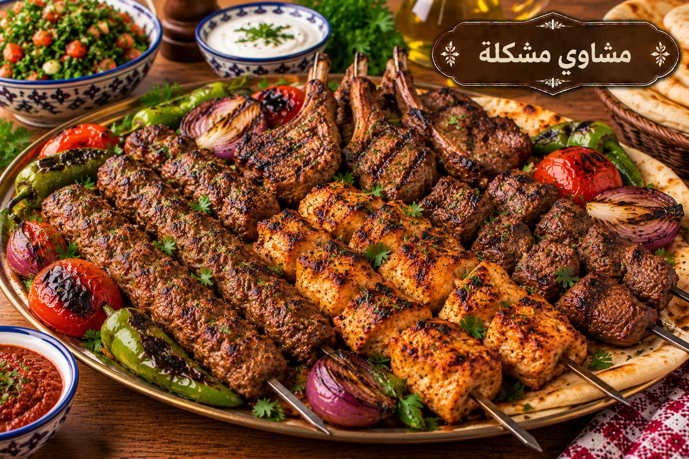

مشاوي مشكلة
تشكيلة لحم ودجاج وكباب

مقادير مشاوي مشكلة
- 500 غ مكعبات لحم
- 500 غ دجاج مكعبات
- 500 غ كفتة
- 2 فلفل رومي
- 2 بصل
- 2 ملعقة كبيرة زيت
- 2 ملعقة صغيرة ملح موزعة
- 1 ملعقة صغيرة فلفل أسود
- 1 ملعقة صغيرة بابريكا
- 1 ملعقة صغيرة بهار مشكل
طريقة عمل مشاوي مشكلة
- تبلي اللحم والدجاج كل نوع على حدة بالزيت والملح والبهارات واتركيهما 30 دقيقة.
- شكلي الكفتة على أسياخ وثبتيها جيدًا.
- سخني الشواية جدًا ورتبي الأسياخ من دون ازدحام.
- اشوي الدجاج حتى ينضج تمامًا، واللحم حسب القطع، والكفتة مع التقليب المنتظم حتى تتحمر من كل الجهات.
- اتركي المشاوي دقائق قليلة قبل التقديم مع الخبز والخضار.